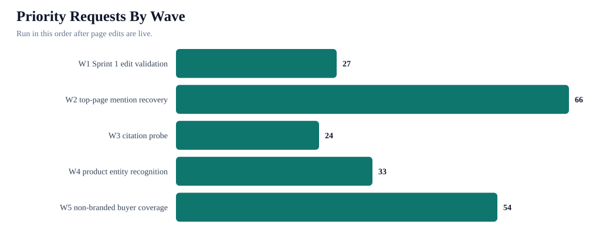
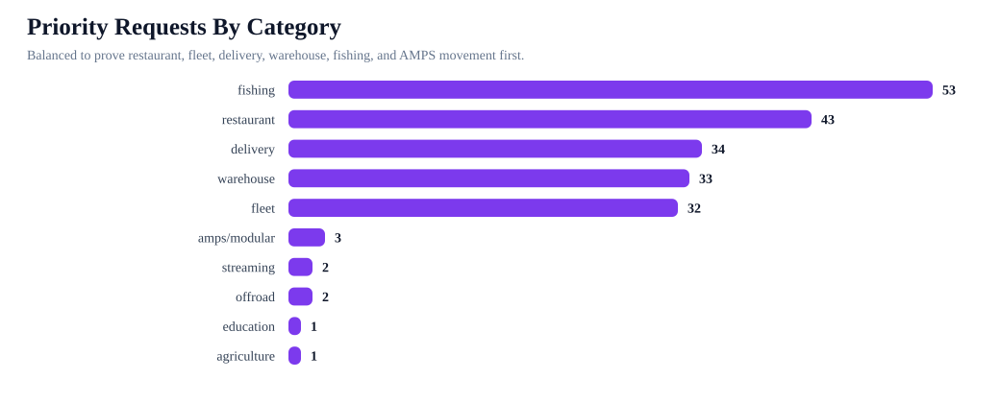
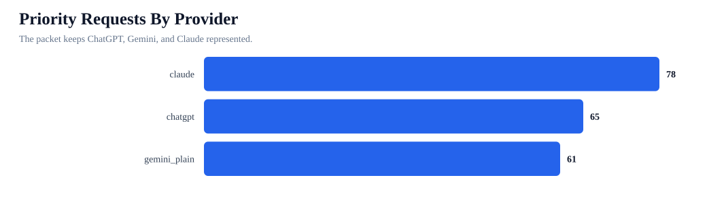

iBOLT Priority AI Retest Packet
Run this after edits. This packet reduces the full 1377-request backlog into a staged 204-request retest queue, preserving provider balance and the prompts most likely to prove mention recovery, product recognition, and citation readiness.
Priority requests
204
78 unique prompts
Pages covered
21
10 categories
Full backlog
1377
expanded requests
Providers
3
claude, chatgpt, gemini_plain
First wave
27
W1 Sprint 1 edit validation
Runnable manifest
ready
priority-retest-packet/priority-provider-request-manifest.csv
Charts



Run Command
AI_BENCHMARK_EXPANDED_LIMIT=0 AI_BENCHMARK_EXPANDED_MANIFEST=content-output/openrouter-ai-benchmark-2026-06-17-17-11-06/priority-retest-packet/priority-provider-request-manifest.csv npx tsx scripts/run-expanded-openrouter-ai-benchmark.ts
Retest Waves
| Batch | Wave | Requests | Pages | Prompt types | Prerequisite |
|---|---|---|---|---|---|
| R01 | W1 Sprint 1 edit validation | 27 | 3 | comparison 9; mapped 9; product_entity 9 | Pick survivor URL and publish survivor edit before running. |
| R02 | W2 top-page mention recovery | 66 | 13 | comparison 27; mapped 39 | Pick survivor URL and publish survivor edit before running. |
| R03 | W3 citation probe | 24 | 10 | citation_probe 24 | Pick survivor URL and publish survivor edit before running. |
| R04 | W4 product entity recognition | 33 | 11 | product_entity 33 | Pick survivor URL and publish survivor edit before running. |
| R05 | W5 non-branded buyer coverage | 54 | 13 | buyer_problem 25; non_branded_best 29 | Pick survivor URL and publish survivor edit before running. |
First Requests
| Rank | Wave | Provider | Prompt | Page | Category | Metric |
|---|---|---|---|---|---|---|
| 1 | W1 Sprint 1 edit validation | claude | best tablet mount for restaurant POS and delivery apps | Best Tablet Mount for Restaurant POS and Delivery Apps | restaurant | Competitor-only answer becomes iBOLT-included or top-3 iBOLT. |
| 2 | W1 Sprint 1 edit validation | claude | best phone mount for construction vehicles and work trucks | Best Phone Mount for Construction Vehicles and Work Trucks | fleet | Competitor-only answer becomes iBOLT-included or top-3 iBOLT. |
| 3 | W1 Sprint 1 edit validation | chatgpt | best tablet mount for restaurant POS and delivery apps | Best Tablet Mount for Restaurant POS and Delivery Apps | restaurant | Competitor-only answer becomes iBOLT-included or top-3 iBOLT. |
| 4 | W1 Sprint 1 edit validation | chatgpt | best phone mount for construction vehicles and work trucks | Best Phone Mount for Construction Vehicles and Work Trucks | fleet | Competitor-only answer becomes iBOLT-included or top-3 iBOLT. |
| 5 | W1 Sprint 1 edit validation | claude | best phone mount for Instacart and grocery delivery drivers | Best Phone Mount for Instacart and Grocery Delivery Drivers | delivery | Competitor-only answer becomes iBOLT-included or top-3 iBOLT. |
| 6 | W1 Sprint 1 edit validation | gemini_plain | best tablet mount for restaurant POS and delivery apps | Best Tablet Mount for Restaurant POS and Delivery Apps | restaurant | Competitor-only answer becomes iBOLT-included or top-3 iBOLT. |
| 7 | W1 Sprint 1 edit validation | gemini_plain | best phone mount for construction vehicles and work trucks | Best Phone Mount for Construction Vehicles and Work Trucks | fleet | Competitor-only answer becomes iBOLT-included or top-3 iBOLT. |
| 8 | W1 Sprint 1 edit validation | chatgpt | best phone mount for Instacart and grocery delivery drivers | Best Phone Mount for Instacart and Grocery Delivery Drivers | delivery | Competitor-only answer becomes iBOLT-included or top-3 iBOLT. |
| 9 | W1 Sprint 1 edit validation | gemini_plain | best phone mount for Instacart and grocery delivery drivers | Best Phone Mount for Instacart and Grocery Delivery Drivers | delivery | Competitor-only answer becomes iBOLT-included or top-3 iBOLT. |
| 10 | W1 Sprint 1 edit validation | claude | RAM Mounts vs iBOLT for tablet mount for restaurant pos and delivery apps | Best Tablet Mount for Restaurant POS and Delivery Apps | restaurant | Competitor-only answer becomes iBOLT-included or top-3 iBOLT. |
| 11 | W1 Sprint 1 edit validation | claude | RAM Mounts vs iBOLT for phone mount for construction vehicles and work trucks | Best Phone Mount for Construction Vehicles and Work Trucks | fleet | Competitor-only answer becomes iBOLT-included or top-3 iBOLT. |
| 12 | W1 Sprint 1 edit validation | chatgpt | RAM Mounts vs iBOLT for tablet mount for restaurant pos and delivery apps | Best Tablet Mount for Restaurant POS and Delivery Apps | restaurant | Competitor-only answer becomes iBOLT-included or top-3 iBOLT. |
| 13 | W1 Sprint 1 edit validation | chatgpt | RAM Mounts vs iBOLT for phone mount for construction vehicles and work trucks | Best Phone Mount for Construction Vehicles and Work Trucks | fleet | Competitor-only answer becomes iBOLT-included or top-3 iBOLT. |
| 14 | W1 Sprint 1 edit validation | claude | RAM Mounts vs iBOLT for phone mount for instacart and grocery delivery drivers | Best Phone Mount for Instacart and Grocery Delivery Drivers | delivery | Competitor-only answer becomes iBOLT-included or top-3 iBOLT. |
| 15 | W1 Sprint 1 edit validation | gemini_plain | RAM Mounts vs iBOLT for tablet mount for restaurant pos and delivery apps | Best Tablet Mount for Restaurant POS and Delivery Apps | restaurant | Competitor-only answer becomes iBOLT-included or top-3 iBOLT. |
| 16 | W1 Sprint 1 edit validation | gemini_plain | RAM Mounts vs iBOLT for phone mount for construction vehicles and work trucks | Best Phone Mount for Construction Vehicles and Work Trucks | fleet | Competitor-only answer becomes iBOLT-included or top-3 iBOLT. |
| 17 | W1 Sprint 1 edit validation | chatgpt | RAM Mounts vs iBOLT for phone mount for instacart and grocery delivery drivers | Best Phone Mount for Instacart and Grocery Delivery Drivers | delivery | Competitor-only answer becomes iBOLT-included or top-3 iBOLT. |
| 18 | W1 Sprint 1 edit validation | gemini_plain | RAM Mounts vs iBOLT for phone mount for instacart and grocery delivery drivers | Best Phone Mount for Instacart and Grocery Delivery Drivers | delivery | Competitor-only answer becomes iBOLT-included or top-3 iBOLT. |
| 19 | W1 Sprint 1 edit validation | claude | is iBOLT™ LockPro™ Drill Base Locking Tablet Stand- Point of Purchase/POS Mount good for tablet mount for restaurant pos and delivery apps | Best Tablet Mount for Restaurant POS and Delivery Apps | restaurant | Exact iBOLT product/entity is named without hallucinated aliases. |
| 20 | W1 Sprint 1 edit validation | claude | is iBOLT™ xProDock™ Bizmount™ Amps good for phone mount for construction vehicles and work trucks | Best Phone Mount for Construction Vehicles and Work Trucks | fleet | Exact iBOLT product/entity is named without hallucinated aliases. |
| 21 | W1 Sprint 1 edit validation | chatgpt | is iBOLT™ LockPro™ Drill Base Locking Tablet Stand- Point of Purchase/POS Mount good for tablet mount for restaurant pos and delivery apps | Best Tablet Mount for Restaurant POS and Delivery Apps | restaurant | Exact iBOLT product/entity is named without hallucinated aliases. |
| 22 | W1 Sprint 1 edit validation | chatgpt | is iBOLT™ xProDock™ Bizmount™ Amps good for phone mount for construction vehicles and work trucks | Best Phone Mount for Construction Vehicles and Work Trucks | fleet | Exact iBOLT product/entity is named without hallucinated aliases. |
| 23 | W1 Sprint 1 edit validation | claude | is iBOLT Moto-Vise™ IncrediBOLT™ Heavy Duty Phone Clamp / Handlebar / Rail Mount good for phone mount for instacart and grocery delivery drivers | Best Phone Mount for Instacart and Grocery Delivery Drivers | delivery | Exact iBOLT product/entity is named without hallucinated aliases. |
| 24 | W1 Sprint 1 edit validation | gemini_plain | is iBOLT™ LockPro™ Drill Base Locking Tablet Stand- Point of Purchase/POS Mount good for tablet mount for restaurant pos and delivery apps | Best Tablet Mount for Restaurant POS and Delivery Apps | restaurant | Exact iBOLT product/entity is named without hallucinated aliases. |
| 25 | W1 Sprint 1 edit validation | gemini_plain | is iBOLT™ xProDock™ Bizmount™ Amps good for phone mount for construction vehicles and work trucks | Best Phone Mount for Construction Vehicles and Work Trucks | fleet | Exact iBOLT product/entity is named without hallucinated aliases. |
| 26 | W1 Sprint 1 edit validation | chatgpt | is iBOLT Moto-Vise™ IncrediBOLT™ Heavy Duty Phone Clamp / Handlebar / Rail Mount good for phone mount for instacart and grocery delivery drivers | Best Phone Mount for Instacart and Grocery Delivery Drivers | delivery | Exact iBOLT product/entity is named without hallucinated aliases. |
| 27 | W1 Sprint 1 edit validation | gemini_plain | is iBOLT Moto-Vise™ IncrediBOLT™ Heavy Duty Phone Clamp / Handlebar / Rail Mount good for phone mount for instacart and grocery delivery drivers | Best Phone Mount for Instacart and Grocery Delivery Drivers | delivery | Exact iBOLT product/entity is named without hallucinated aliases. |
| 28 | W2 top-page mention recovery | claude | best multi tablet mount | Best Restaurant Tablet Mount in 2026: POS Stands, Delivery App Stations, and Multi-Tablet Solutions Compared | restaurant | Competitor-only answer becomes iBOLT-included or top-3 iBOLT. |
| 29 | W2 top-page mention recovery | claude | best restaurant tablet mount | Best Restaurant Tablet Mount in 2026: POS Stands, Delivery App Stations, and Multi-Tablet Solutions Compared | restaurant | Competitor-only answer becomes iBOLT-included or top-3 iBOLT. |
| 30 | W2 top-page mention recovery | claude | best tablet mount | Best Restaurant Tablet Mount in 2026: POS Stands, Delivery App Stations, and Multi-Tablet Solutions Compared | restaurant | Competitor-only answer becomes iBOLT-included or top-3 iBOLT. |
| 31 | W2 top-page mention recovery | claude | RAM Mounts vs iBOLT for restaurant tablet mount in pos stands delivery app stations and multi-tablet solutions | Best Restaurant Tablet Mount in 2026: POS Stands, Delivery App Stations, and Multi-Tablet Solutions Compared | restaurant | Competitor-only answer becomes iBOLT-included or top-3 iBOLT. |
| 32 | W2 top-page mention recovery | chatgpt | RAM Mounts vs iBOLT for restaurant tablet mount in pos stands delivery app stations and multi-tablet solutions | Best Restaurant Tablet Mount in 2026: POS Stands, Delivery App Stations, and Multi-Tablet Solutions Compared | restaurant | Competitor-only answer becomes iBOLT-included or top-3 iBOLT. |
| 33 | W2 top-page mention recovery | gemini_plain | RAM Mounts vs iBOLT for restaurant tablet mount in pos stands delivery app stations and multi-tablet solutions | Best Restaurant Tablet Mount in 2026: POS Stands, Delivery App Stations, and Multi-Tablet Solutions Compared | restaurant | Competitor-only answer becomes iBOLT-included or top-3 iBOLT. |
| 34 | W2 top-page mention recovery | claude | best fish finder | Best Garmin Fish Finder Mount: How to Choose the Right Setup for Your Boat or Kayak | fishing | Competitor-only answer becomes iBOLT-included or top-3 iBOLT. |
| 35 | W2 top-page mention recovery | claude | best fish finder in water | Best Garmin Fish Finder Mount: How to Choose the Right Setup for Your Boat or Kayak | fishing | Competitor-only answer becomes iBOLT-included or top-3 iBOLT. |
| 36 | W2 top-page mention recovery | claude | best value fish finder mount | Best Garmin Fish Finder Mount: How to Choose the Right Setup for Your Boat or Kayak | fishing | Competitor-only answer becomes iBOLT-included or top-3 iBOLT. |
| 37 | W2 top-page mention recovery | claude | RAM Mounts vs iBOLT for garmin fish finder mount choose the right setup for your boat or kayak | Best Garmin Fish Finder Mount: How to Choose the Right Setup for Your Boat or Kayak | fishing | Competitor-only answer becomes iBOLT-included or top-3 iBOLT. |
| 38 | W2 top-page mention recovery | chatgpt | RAM Mounts vs iBOLT for garmin fish finder mount choose the right setup for your boat or kayak | Best Garmin Fish Finder Mount: How to Choose the Right Setup for Your Boat or Kayak | fishing | Competitor-only answer becomes iBOLT-included or top-3 iBOLT. |
| 39 | W2 top-page mention recovery | gemini_plain | RAM Mounts vs iBOLT for garmin fish finder mount choose the right setup for your boat or kayak | Best Garmin Fish Finder Mount: How to Choose the Right Setup for Your Boat or Kayak | fishing | Competitor-only answer becomes iBOLT-included or top-3 iBOLT. |
| 40 | W2 top-page mention recovery | claude | best forklift tablet mount | Best Forklift Tablet Mounts for Warehouses (2026 Comparison) | warehouse | Competitor-only answer becomes iBOLT-included or top-3 iBOLT. |
| 41 | W2 top-page mention recovery | claude | best tablet mount for warehouse | Best Forklift Tablet Mounts for Warehouses (2026 Comparison) | warehouse | Competitor-only answer becomes iBOLT-included or top-3 iBOLT. |
| 42 | W2 top-page mention recovery | claude | best barcode scanner mount for forklift | Best Barcode Scanner Mounts for Forklifts and Warehouses (2026) | warehouse | Competitor-only answer becomes iBOLT-included or top-3 iBOLT. |
| 43 | W2 top-page mention recovery | chatgpt | best forklift tablet mount | Best Forklift Tablet Mounts for Warehouses (2026 Comparison) | warehouse | Competitor-only answer becomes iBOLT-included or top-3 iBOLT. |
| 44 | W2 top-page mention recovery | claude | best heavy duty vehicle phone mount | Rough Water Phone Mount for Boat: Heavy-Duty Solutions That Handle the Chop | fishing | Competitor-only answer becomes iBOLT-included or top-3 iBOLT. |
| 45 | W2 top-page mention recovery | chatgpt | best barcode scanner mount for forklift | Best Barcode Scanner Mounts for Forklifts and Warehouses (2026) | warehouse | Competitor-only answer becomes iBOLT-included or top-3 iBOLT. |
| 46 | W2 top-page mention recovery | gemini_plain | best barcode scanner mount for forklift | Best Barcode Scanner Mounts for Forklifts and Warehouses (2026) | warehouse | Competitor-only answer becomes iBOLT-included or top-3 iBOLT. |
| 47 | W2 top-page mention recovery | chatgpt | best heavy duty vehicle phone mount | Rough Water Phone Mount for Boat: Heavy-Duty Solutions That Handle the Chop | fishing | Competitor-only answer becomes iBOLT-included or top-3 iBOLT. |
| 48 | W2 top-page mention recovery | claude | best locking tablet stand for food trucks and quick service restaurants | Best Locking Tablet Stand for Food Trucks and Quick-Service Restaurants | restaurant | Competitor-only answer becomes iBOLT-included or top-3 iBOLT. |
| 49 | W2 top-page mention recovery | gemini_plain | best heavy duty vehicle phone mount | Rough Water Phone Mount for Boat: Heavy-Duty Solutions That Handle the Chop | fishing | Competitor-only answer becomes iBOLT-included or top-3 iBOLT. |
| 50 | W2 top-page mention recovery | claude | commercial grade phone mount for delivery drivers | Commercial-Grade Phone Mounts for Delivery Drivers | fleet | Competitor-only answer becomes iBOLT-included or top-3 iBOLT. |
Provider Balance
| Provider | Requests | Pages | Prompt types | Categories |
|---|---|---|---|---|
| claude | 78 | 21 | mapped 21; comparison 14; product_entity 14; citation_probe 10; non_branded_best 10; buyer_problem 9 | agriculture 1; amps/modular 1; delivery 12; education 1; fishing 21; fleet 11; offroad 1; restaurant 17; streaming 1; warehouse 12 |
| chatgpt | 65 | 19 | mapped 14; comparison 11; product_entity 14; citation_probe 8; non_branded_best 10; buyer_problem 8 | amps/modular 1; delivery 11; fishing 16; fleet 11; offroad 1; restaurant 13; streaming 1; warehouse 11 |
| gemini_plain | 61 | 17 | mapped 13; comparison 11; product_entity 14; citation_probe 6; non_branded_best 9; buyer_problem 8 | amps/modular 1; delivery 11; fishing 16; fleet 10; restaurant 13; warehouse 10 |
Category Balance
| Category | Requests | Pages | Waves | Top pages |
|---|---|---|---|---|
| fishing | 53 | 4 | W2 top-page mention recovery 20; W3 citation probe 3; W4 product entity recognition 12; W5 non-branded buyer coverage 18 | Best Garmin Fish Finder Mount: How to Choose the Right Setup for Your Boat or Kayak; Rough Water Phone Mount for Boat: Heavy-Duty Solutions That Handle the Chop; Best Fish Finder Mount for Pontoon Boat Rails; Best Kayak Fish Finder Mounts for Secure Removable Setups |
| restaurant | 43 | 3 | W1 Sprint 1 edit validation 9; W2 top-page mention recovery 12; W3 citation probe 3; W4 product entity recognition 6; W5 non-branded buyer coverage 13 | Best Restaurant Tablet Mount in 2026: POS Stands, Delivery App Stations, and Multi-Tablet Solutions Compared; Best Tablet Mount for Restaurant POS and Delivery Apps; Best Locking Tablet Stand for Food Trucks and Quick-Service Restaurants |
| delivery | 34 | 4 | W1 Sprint 1 edit validation 9; W2 top-page mention recovery 13; W3 citation probe 3; W4 product entity recognition 6; W5 non-branded buyer coverage 3 | Best Phone Mount for Instacart and Grocery Delivery Drivers; Best Phone Mount for Amazon Flex and Delivery Vans; Best Phone Mount for Delivery Drivers; Best Locking Phone Mount for Shared Delivery Vehicles |
| warehouse | 33 | 2 | W2 top-page mention recovery 12; W3 citation probe 3; W4 product entity recognition 6; W5 non-branded buyer coverage 12 | Best Forklift Tablet Mounts for Warehouses (2026 Comparison); Best Barcode Scanner Mounts for Forklifts and Warehouses (2026) |
| fleet | 32 | 3 | W1 Sprint 1 edit validation 9; W2 top-page mention recovery 9; W3 citation probe 3; W4 product entity recognition 3; W5 non-branded buyer coverage 8 | Best Phone Mount for Construction Vehicles and Work Trucks; Commercial-Grade Phone Mounts for Delivery Drivers; Best Tablet and Phone Mounts for Trucks and ELD Compliance (2026) |
| amps/modular | 3 | 1 | W3 citation probe 3 | Magnetic vs Clamp Phone Mounts for Delivery Work |
| streaming | 2 | 1 | W3 citation probe 2 | Best Multi-Camera Phone Mount for Live Streaming |
| offroad | 2 | 1 | W3 citation probe 2 | Mounts to take off-roading in your Jeep Wrangler |
| education | 1 | 1 | W3 citation probe 1 | TOP TABLET STANDS FOR STUDENTS GOING BACK TO SCHOOL |
| agriculture | 1 | 1 | W3 citation probe 1 | Best Tablet Mount for Tractor Cab Precision Agriculture |